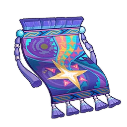

Natlan · Books & Literature
The Tale of Kuntur
This Natlan folk tale follows Kuntur, the sun-cursed son of Ukuku and Qoyllor, as he frees his tribe’s stolen Saurians and earns an Iktomisaurus companion by letting it choose him.

Ukuku’s Son and the Sun’s Curse
The Tale of Kuntur is a single-volume Natlan collection and the sequel to The Tale of Qoyllor and Ukuku. It begins after Qoyllor returns to the sky, leaving Ukuku to raise their son Kuntur alone. The Sun’s punishment follows the family: Ukuku is blinded, clouds follow them, and no Saurian will bond with the young Kuntur.
Kuntur grows up excluded and sickly, but inherits his mother’s star-bright eyes and his father’s hunting skills. The book leaves the Sun unnamed; it does not identify it with a known Archon, Sovereign, or other god.
Rumi Steals the Tribe’s Saurians
A ragged traveler is welcomed and fed by the tribe, then revealed as the sorcerer Rumi. After the people stop hosting him, he steals their Saurians and turns three warriors into talking Pakpakas. Kuntur volunteers to pursue him, navigating Rumi’s illusions by sound and smell as Ukuku taught him.
When Rumi flees as smoke, Kuntur frees the captured Saurians. At first he tries to force the boldest Iktomisaurus to help him track the sorcerer, then sees its distress and releases it, asking it to fly wherever it chooses.
The Iktomisaurus Chooses Kuntur
The freed Iktomisaurus later returns of its own accord. The narrator says Iktomisaurs choose their partners and that the saurian has recognized Kuntur. Together they pursue Rumi through a series of transformations, from animal forms to a giant rock, and catch him above the clouds.
Kuntur sees the Sun for the first time, but it brings more clouds around them rather than lifting the inherited curse. The rock-form Rumi freezes in the storm. The three warriors return to human form, and Kuntur comes home with an Iktomisaurus companion who chose him.
The Tale’s Scope
The book’s central turn is Kuntur’s decision not to compel the saurian: his restraint makes the voluntary bond possible. It is a folktale sequel that illustrates how a Saurian may choose a human partner, not a chronicle proving the supernatural details as recorded history.
The tale does not name Kuntur’s Iktomisaurus, the three warriors, or the Sun. It also does not identify Kuntur with a separate historical or legendary figure outside this story.
This is an original CoreGG reading guide, not an official HoYoverse article or a reproduction of the game text. Source links below identify the records used so you can check the original context.
Sources & references
Check these sources for the original game text and reference trail.